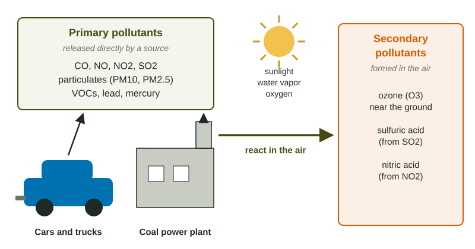

Air pollution is anything in the air, solid, liquid or gas, at a level that harms people, other living things or materials. Most of it comes from one everyday act: burning fuel. This page sorts air pollutants into two kinds, follows the main ones back to their sources, and ends with the law that limits them in the United States.
Primary and secondary pollutants

A primary pollutant is released directly by its source. Carbon monoxide leaving a tailpipe and sulfur dioxide leaving a smokestack are primary. A secondary pollutant is not released by anything. It forms in the air when primary pollutants react with each other, with oxygen, with water vapor or with the energy in sunlight. Ozone near the ground is the classic example: no tailpipe emits it, yet it builds up on sunny afternoons from nitrogen oxides and volatile organic compounds. Sulfuric acid and nitric acid are secondary too. They form when SO2 and NO2 react with water in the air.
The difference matters for solutions. You can cut a primary pollutant at the pipe it comes from. To cut a secondary pollutant, you have to cut the primary pollutants it is made from.
The main pollutants and where they come from
| Pollutant | Main human sources | Why it matters |
|---|---|---|
| Carbon monoxide (CO) | incomplete burning: car exhaust, generators, furnaces, wood stoves | binds to hemoglobin, so the blood carries less oxygen |
| Nitrogen oxides (NOx) | any hot combustion: vehicles, power plants | irritate lungs; help form ozone near the ground; become nitric acid |
| Sulfur dioxide (SO2) | burning coal, and diesel and fuel oil with sulfur in them | irritates airways; becomes sulfuric acid |
| Particulate matter (PM10, PM2.5) | coal and diesel soot, wood smoke, dust, construction | the smallest reach deep into the lungs and the blood |
| Volatile organic compounds (VOCs) | gasoline vapor, paints, solvents, some trees | react with NOx in sunlight to make ozone |
| Lead | once leaded gasoline; today metal smelting | damages the nervous system, especially in children |
Coal deserves its own line. Coal formed from ancient plants and holds sulfur, mercury and other metals as impurities. Burning it releases CO2, SO2, particulates and those metals. Nitrogen oxides work differently. Fuel holds almost no nitrogen, but air is about 78% nitrogen gas. At the high temperatures inside an engine or boiler, nitrogen and oxygen from the air combine to form NO, which turns into the brownish gas NO2. So any fuel burned hot, even natural gas, makes some NOx.
Particulate matter is sorted by size. PM10 particles are 10 micrometers across or smaller; PM2.5 particles are 2.5 micrometers or smaller, about one thirtieth the width of a human hair. The smaller the particle, the deeper it travels into the lungs, so PM2.5 does the most harm for its mass.
The Clean Air Act
The Clean Air Act (1970, with major amendments in 1977 and 1990) is the main United States air pollution law. Under it, the EPA sets national limits for six criteria pollutants: carbon monoxide, lead, nitrogen dioxide, ozone, particulate matter and sulfur dioxide. States must keep their air under those limits, and the law also limits what new cars, power plants and factories may release. One of its clearest results came from lead. Car exhaust was once the main source of lead in city air; when rules phased lead out of gasoline, airborne lead fell by more than 90%.
Notice the difference between a policy and a technology. A filter in a smokestack is a technology. A law that requires plants to cut their emissions, so they install such a filter, is a policy. Exam questions ask for one or the other, so name the right kind.
Working with emissions numbers
Worked example: a share of the total. A city releases 8,000 tons of NOx a year, and 4,200 tons of it come from cars and trucks. What percent comes from vehicles?
Setup: . The tons cancel. Answer: .
Worked example: units that cancel. A truck drives 30,000 miles a year and releases 4 grams of NOx per mile. How many kilograms of NOx is that a year?
Setup: . Miles cancel, then grams cancel, leaving kilograms. Answer: of NOx a year.
Write every factor with its units so you can see them cancel. If the unit left at the end is not the one the question asks for, a factor is upside down.